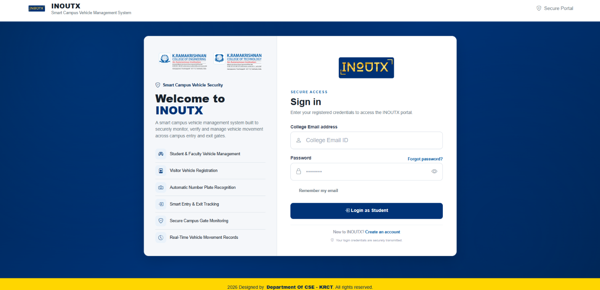
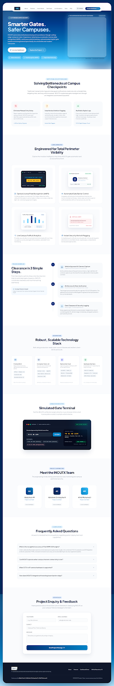

Smarter Gates.
Safer Campuses.
AI-Powered College Bus Entry & Exit Monitoring
“INOUTX combines YOLO-based bus detection, vehicle tracking, number plate recognition, and virtual-line crossing logic to monitor registered college bus movements and maintain digital records.”
About the System
INOUTX is an AI-Based College Transport Management System designed to automate and simplify college bus monitoring at KRCT and KRCE campuses. The system uses Artificial Intelligence, computer vision, YOLOv8 vehicle detection, vehicle tracking, and PaddleOCR-based number plate recognition to identify and verify registered college buses through live CCTV cameras. Its First Virtual Line Crossing Concept determines whether a bus is entering or exiting based on which configured virtual line it crosses first. MongoDB Atlas stores registered bus information and verified vehicle movement records, enabling centralized monitoring and efficient report management.
From a non-technical perspective, INOUTX reduces the need for manual vehicle monitoring and paper-based records, helping college authorities track bus movements more efficiently and reliably. By automating vehicle identification, entry and exit classification, and recordkeeping, the system saves time, reduces human error, and improves campus transport management. Combining intelligent automation with a user-friendly monitoring interface, INOUTX aims to provide a smarter, more organized, and dependable transportation monitoring solution for educational institutions.
System Workflow in 6 Connected Steps
How the INOUTX system tracks, verifies, and records college bus movements step by step.
Camera Input
Captures live video from KRCT and KRCE college gate cameras or uses recorded videos for testing.
Bus Detection
Identifies buses in camera footage using AI, helping the system focus on college bus movements.
Vehicle Tracking
Tracks detected buses as they move through the camera view to follow their movement consistently.
Entry & Exit Detection
Uses virtual lines on the camera view to determine whether a bus is entering or leaving the college. The first line touched determines the movement direction.
Number Plate Recognition
Reads the bus number plate and checks it against registered college bus records to identify authorized college buses.
Movement Recording
Automatically records verified college bus movements, including the bus number, date, time, gate, and entry or exit status.
Key Features of INOUTX
A smart college transport monitoring system that identifies registered college buses, tracks their movements, and automatically records their entry and exit at campus gates.
AI-Based Bus Detection
Identifies buses in camera footage using artificial intelligence, helping the system focus on college bus movements.
Vehicle Tracking
Follows detected buses as they move through the camera view to monitor their movements consistently.
Entry & Exit Detection
Uses virtual lines on the camera view to determine whether a bus is entering or leaving the campus. The first line touched determines the direction.
Number Plate Recognition
Reads bus number plates automatically to help identify each vehicle.
Registered Bus Verification
Checks the recognized bus number against registered college bus records to confirm whether the bus is authorized.
Digital Transit Records
Automatically records verified bus movements, including the bus number, date, time, gate, and entry or exit status.
Reports & Administration
Generates daily bus movement reports and emails summaries to campus authorities according to the configured schedule.
Multiple Gate Support
Supports monitoring at both KRCT Gate 01 and KRCE Gate 01, depending on the availability of their configured camera streams.
Technologies Behind INOUTX
INOUTX combines AI, camera technology, and cloud storage to monitor registered college buses and record their movements automatically.
Python
Runs the main system and coordinates bus detection, tracking, and movement recording.
AI Bus Detection & Tracking
Identifies buses in camera footage and follows their movements to help determine their entry and exit.
Camera Processing
Captures and processes camera footage, displays virtual detection lines, and helps configure gate monitoring.
Number Plate Recognition
Reads bus number plates from camera images to help identify registered college buses.
Web Application & Live Updates
Connects the system to the website dashboard, allowing users to view bus monitoring information and live updates.
Cloud Database
Stores registered college bus details and verified movement records securely in a cloud database.
Monitoring Dashboard
Provides a user-friendly interface for viewing college bus activity and accessing available monitoring information.
CCTV Camera Streams
Receives video from connected gate cameras to monitor bus movements at KRCT and KRCE.
Project Visual Gallery
A creative visual overview of the live monitoring interface, detection architecture, and engineering team.




Meet the INOUTX Team
Department of Computer Science and Engineering (CSE)
K. Ramakrishnan College of Technology (Autonomous), Tiruchirappalli
ABDUL ASIM M
AI & Computer Vision LeadDept. of Computer Science & Engineering
KRCT, Tiruchirappalli
ABISHEK CHRISTOPHER R
Hadware Connectivity & Overall Project CoordinatorDept. of Computer Science & Engineering
KRCT, Tiruchirappalli
Frequently Asked Questions
Common questions regarding bus identification, duplicate movement checks, gate monitoring, and transit records.
What happens if the camera cannot read a bus's number plate clearly? expand_more
INOUTX attempts to recognize the number plate from the camera footage. If the plate cannot be identified reliably, the bus may remain unverified until sufficient information is available. This helps reduce incorrect bus identification.
How does INOUTX avoid recording the same bus movement multiple times? expand_more
INOUTX uses vehicle tracking and a time-based duplicate check to reduce repeated records for the same movement. This helps keep transit logs organized and minimizes unnecessary duplicate entries.
Can INOUTX monitor buses at multiple college gates? expand_more
Yes. INOUTX is designed to support KRCT Gate 01 and KRCE Gate 01. Each gate uses its configured camera stream to monitor bus movements and associate transit records with the appropriate gate.
Where are bus movement records stored, and can they be reviewed later? expand_more
Verified bus movement records are stored in MongoDB Atlas, a cloud database. Authorized users can review available transit information, such as bus numbers, timestamps, gate details, and entry or exit status, through the application's supported viewing and reporting features.
Project Enquiry & Technical Feedback
For academic inquiries, implementation questions, or campus pilot demonstrations.